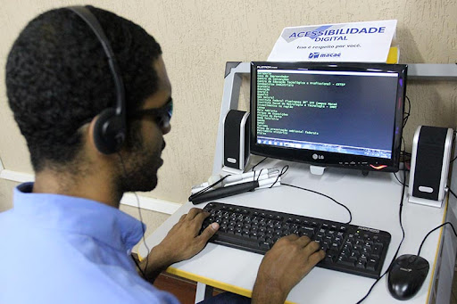
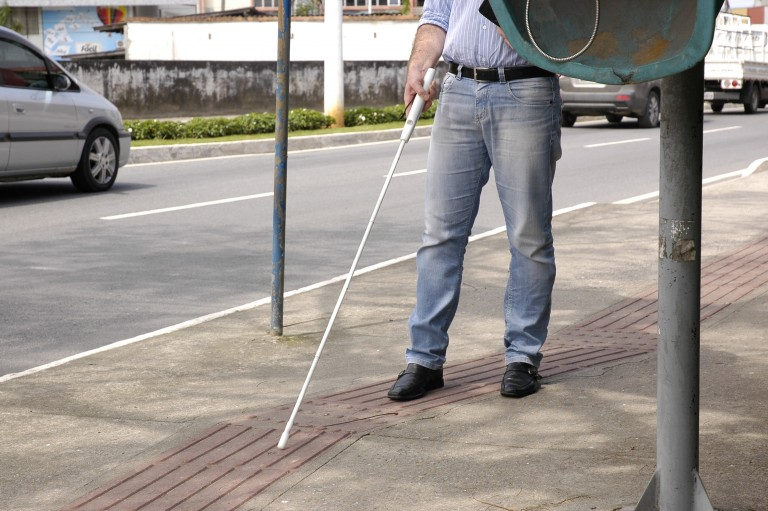
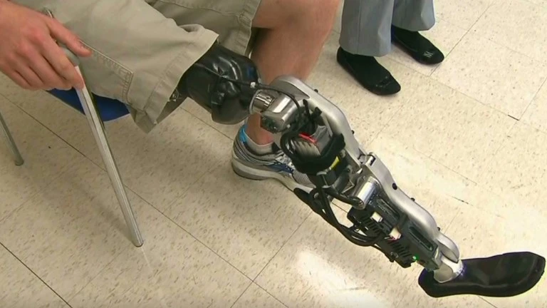

Leitores de tela e ampliadores de imagem
Uma das mais bem sucedidas tecnologias assistivas são os leitores de tela, que basicamente fazem o trabalho de transcrever para linguagem falada o conteúdo textual presente na tela do dispositivo eletrônico, como computadores, celulares e tablets. Ele é pensado para pessoas com baixa visão ou cegueira completa e tem sido amplamente utilizado pois cumpre muito bem a função de transmitir para pessoa cega as informações presentes na página.
O maior problema são os conteúdos não textuais que têm importância para o entendimento do conteúdo, como imagens e gráficos. Porém, esse problema não é causado pela tecnologia em si, mas pela falta de preocupação dos disponibilizadores dos conteúdos de colocar descrições detalhadas desses conteúdos, pois os leitores de tela são preparados para ler imagens a partir da descrição “alt” delas, incluída nos códigos-fonte do site ou app, mas muitas páginas não cumprem com esse bom hábito.
Mas a solução para esse problema já começou a aparecer, visto que iniciativas como #PraCegoVer seguido da descrição do conteúdo têm se tornado cada vez mais populares. Além disso, se tem dado maior atenção também a essas pautas dentro da área de tecnologia (como é o caso deste artigo) e cabe aos profissionais de TI melhorarem a esta tecnologia.
Hand Talk
Hand Talk é um aplicativo nacional de comunicação alternativa que tem como objetivo realizar a tradução de texto e voz para Libras (Língua Brasileira de Sinais) de modo online, além de oferecer extensão para os sites, tornando todas as informações digitais acessíveis para as pessoas com deficiência auditiva.
A ferramenta possui dois intérpretes digitais, os avatares Hugo e Maya, que podem ser ajustados de acordo com o usuário e desenvolvem os sinais e gestos para facilitar a comunicação com as pessoas surdas ou com dificuldade auditiva. O aplicativo também disponibiliza uma sessão com vídeos educativos e uma área de dicionário.
Be My Eyes
O Be My Eyes conecta voluntários videntes (pessoas que enxergam) com pessoas com deficiência visual que necessitam de auxílio para executar uma tarefa cotidiana, como saber a cor da camisa que estão comprando em uma loja, descobrir a marca ou a validade de um produto no supermercado, realizar uma compra online, entre outras atividades, tornando tais atividades mais acessíveis.
O Aplicativo se encaixa na categoria de auxílio para a vida diária e prática e também é um grande exemplo de como as soluções para as dificuldades vividas por pessoas com deficiência muitas vezes são simples, basta que se tenha um olhar sensível o suficiente para enxergá-la.

Bengala Eletrônica
As bengalas eletrônicas foram desenvolvidas com o objetivo de auxiliar as pessoas com dificuldades motoras a se movimentar com mais facilidade e com mais segurança em ambientes, como as grandes cidades, que possuem obstáculos e podem gerar um impasse na locomoção. Existem vários tipos de bengalas eletrônicas, uma delas foi criada para ajudar pessoas com deficiência visual, que possui dois sensores que avisam quando há um obstáculo a um metro de distância. Essa ferramenta possui um microcontrolador que processa os dados sonares e aciona os motores, de tal maneira que aciona o usuário e facilita todo seu processo de movimentação. Outro modelo, também de bengala eletrônica é capaz de emitir alertas sonoros e de vibração em relação aos obstáculos em altura detectados através de um sensor ultrassônico, contribuindo, principalmente, para a locomoção em centros urbanos.

Pernas Robóticas
Estas estão se tornando cada vez mais comuns e foram desenvolvidas para ajudar pessoas sem pernas ou que não conseguem movê-las a se locomoverem, assim elas podem até subir e descer escadas mais facilmente e, logo, podem realizar tarefas do cotidiano. Elas são da categoria de órteses e próteses, mas se encaixam também em outras categorias, como Auxílio para a vida diária e prática, auxílio de mobilidade e, a depender do uso, até mesmo esporte e lazer.